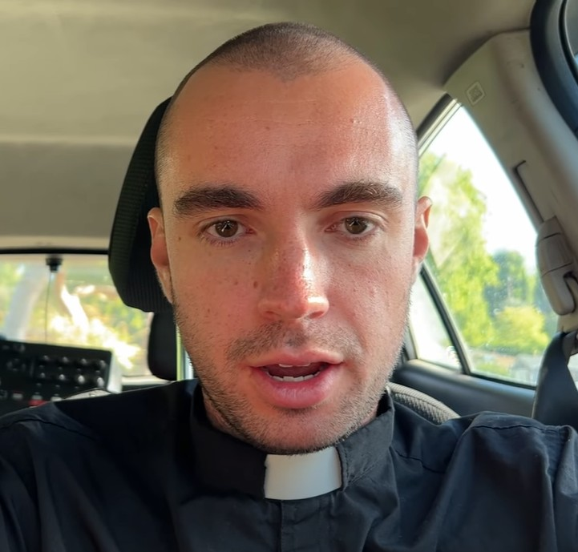

Some years ago, Dan Hentschel happened across the Orb in the video above. As he describes, the Orb will unpredictably throw him through time and space, causing him to experience varying amounts of time in a completely different (but still eerily familiar) reality. These experiences are seemingly without pattern in frequency or kind, but that's exactly the point of archiving them. One may yet appear.
Priest Dan

Notable events
Performing Good Friday Mass while under the influence of weed.